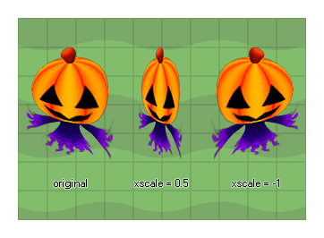

Dieser Wert legt die horizontale Skalierung fest, die auf das Sprite angewendet wird, das der aktuellen Instanz zugewiesen wurde. Eine Skalierung von 1 zeigt keine Skalierung an (1: 1), kleinere Werte werden verkleinert (0,5, z. B. wird die Hälfte der Breite des Sprites), größere Werte skalieren und negative Werte spiegeln das Sprite und skalieren es, es sei denn, Der verwendete Wert ist genau -1 (in diesem Fall wird das Sprite nur um seinen Ursprung herum ohne Skalierung umgedreht). 
image_xscale;
Real
if image_xscale < 5
{
image_xscale += 0.2;
image_yscale = image_xscale;
}
else
{
instance_create_layer(x, y, "Effects",
obj_Explosion);
instance_destroy();
}
Der obige Code skaliert das Sprite, und sobald es auf das 5-fache seiner ursprünglichen Größe skaliert wurde, wird eine neue Instanz eines anderen Objekts erstellt und die Instanz zerstört.